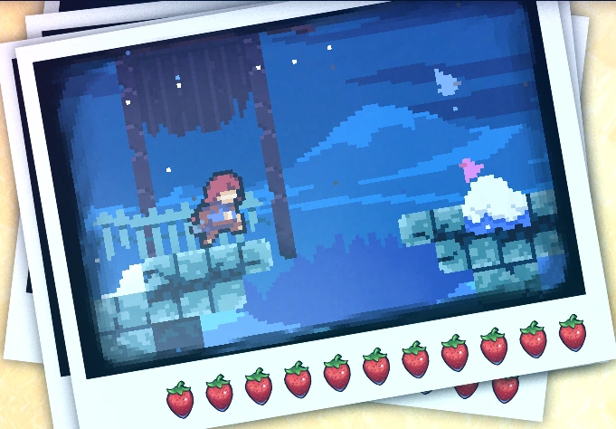
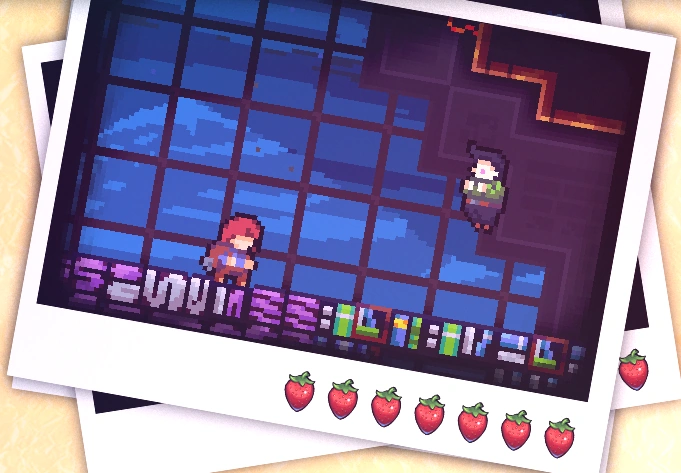
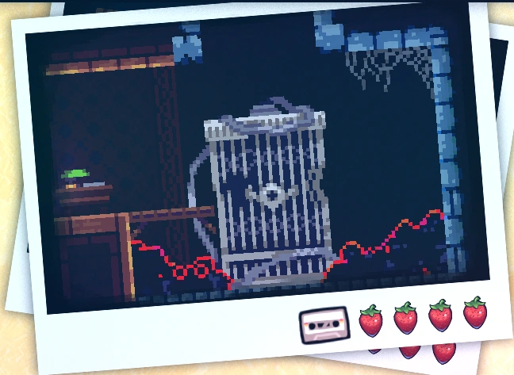
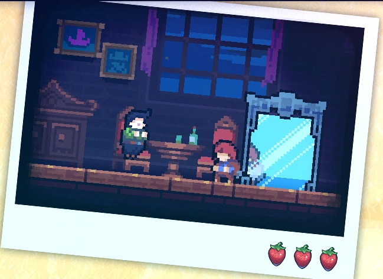

Chapter 3: Celestial Resort
Celestial Resort is the third chapter of Celeste. Its gameplay is precise, making the chapter considered by some as more challenging than later chapters.
Mechanics
Plot
Celestial Resort introduces 1 new character:
• Oshiro.
Madeline finds a run-down hotel and meets Mr. Oshiro, the concierge, who insists she stays despite her intention to leave. While Madeline helps clean the messy hotel, Theo suggests an escape, but Madeline remains determined to help Mr. Oshiro. Despite her efforts, Mr. Oshiro's breakdown leads to a confrontation in the presidential suite, where Badeline intervenes, exposing Mr. Oshiro's misguided intentions. After a tense encounter, Madeline and Mr. Oshiro end up on the hotel roof, resulting in the closure of the place for repairs. Despite the turmoil, Madeline continues her journey, leaving Mr. Oshiro behind.
Dialogues
Collectibles
Crystal Heart:
The crystal heart of chapter 3 is acquired in the second sub-chapter, where the player has the task of cleaning up the hotel mess. To acquire the crystal heart, the player needs to follow the right path (where Theo is found). After pressing the button, it is necessary to go right, where there is a waterfall, revealing a secret passage. The player should backtrack to reach the room where Theo is found. On the ceiling of the room, there will be a secret passage where the heart is found.

Cassette Tape:
The cassette tape of chapter 3 is acquired in the third sub-chapter after accessing a secret
passage. In
the cassette tape room, rhythmic platforms are found. After reaching the goal, a bubble
will
transport the player back to the beginning of the room.
- See: how to find...

Strawberries:
• Golden Strawberry:
Obtained after completing the level while holding the golden strawberry. Can only be achieved after completing the side B of chapter 8.
• Red Strawberry:
Strawberry 1: Red Strawberry:
Strawberry 2: Red Strawberry:
Strawberry 3: Red Strawberry:
Strawberry 4: Red Strawberry:
Strawberry 5: Red Strawberry:
Strawberry 6: Red Strawberry:
Strawberry 7: Red Strawberry:
Strawberry 8: Red Strawberry:
Strawberry 9: Red Strawberry:
Strawberry 10: Red Strawberry:
Strawberry 11: Red Strawberry:
Strawberry 12: Red Strawberry:
Strawberry 13: Red Strawberry:
Strawberry 14: Red Strawberry:
Strawberry 15: Red Strawberry:
Strawberry 16: Red Strawberry:
Strawberry 17: Red Strawberry:
Strawberry 18: Red Strawberry:
Strawberry 19: Red Strawberry:
Strawberry 20: Red Strawberry:
Strawberry 21: Red Strawberry:
Strawberry 22: Red Strawberry:
Strawberry 23: Red Strawberry:
Strawberry 24: Red Strawberry:
Strawberry 25: Red Strawberry:
Sub-chapters
Celestial Resort has 4 sub-chapters:
Start
Huge Mess
Elevator Shaft
Presidential Suite
